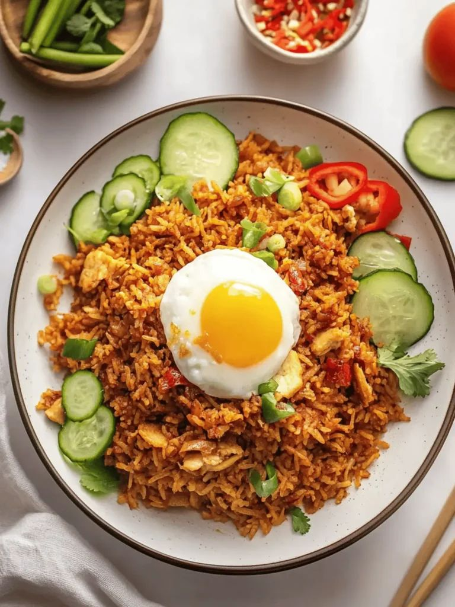
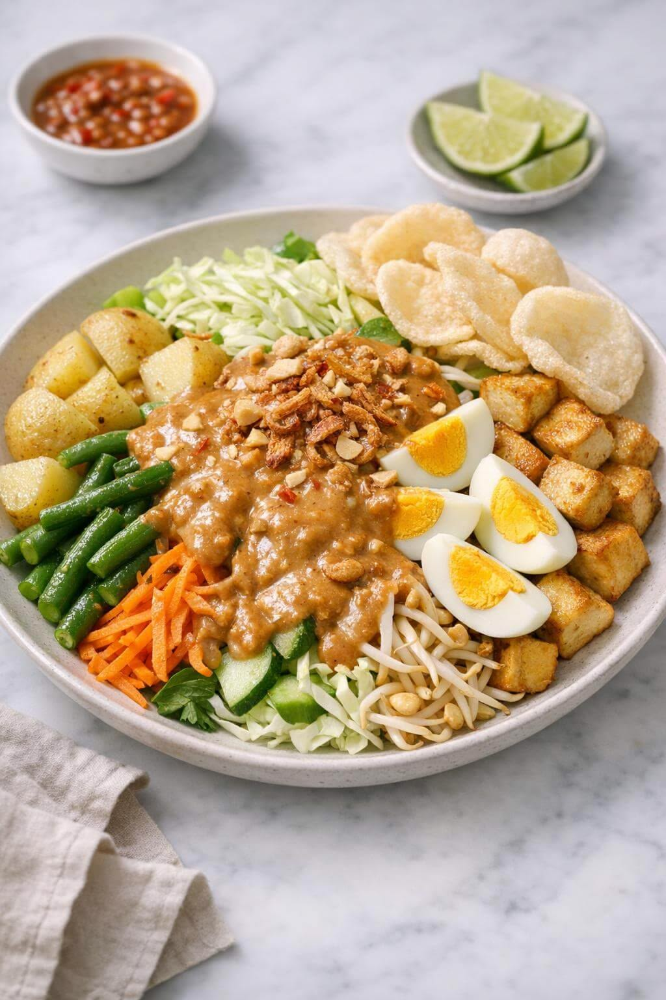
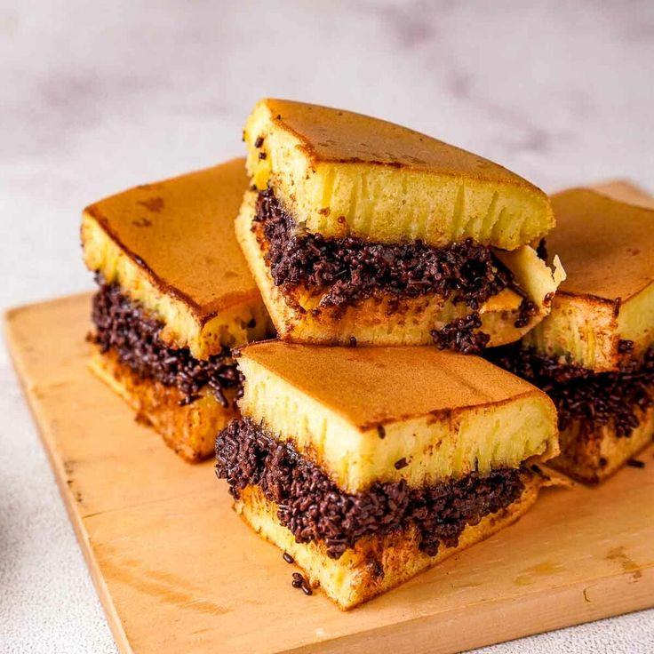

🍳 Yubin Kitchen – Resep Nusantara

Nasi Goreng
Bahan:
- 2 piring nasi putih
- 1 butir telur
- 2 siung bawang putih
- 1 sdm kecap manis
- 1 sdt garam
- 1 sdm minyak goreng
- 50 gram ayam suwir
Langkah:
- Panaskan minyak di wajan.
- Tumis bawang putih hingga harum.
- Masukkan telur lalu orak-arik.
- Tambahkan ayam suwir.
- Masukkan nasi putih.
- Tambahkan kecap manis dan garam.
- Aduk hingga rata dan matang.
Sate Ayam
Bahan:
- 300 gram daging ayam
- 2 sdm kecap manis
- 1 siung bawang putih
- 1 sdt garam
- 1 sdm minyak
- 100 gram kacang tanah
Langkah:
- Potong ayam kecil-kecil.
- Tusuk dengan tusuk sate.
- Haluskan kacang tanah untuk saus.
- Bakar sate di atas arang.
- Olesi kecap manis saat dibakar.
- Sajikan dengan saus kacang.

Gado-Gado
Bahan:
- 100 gram kangkung
- 100 gram tauge
- 1 buah telur rebus
- 2 potong tahu goreng
- 2 potong tempe goreng
- 150 gram kacang tanah
- 1 sdm gula merah
Langkah:
- Rebus kangkung dan tauge.
- Goreng tahu dan tempe.
- Haluskan kacang tanah dan gula merah.
- Tambahkan sedikit air untuk saus.
- Susun sayuran di piring.
- Siram dengan saus kacang.

Rendang
Bahan:
- 500 gram daging sapi
- 400 ml santan
- 3 siung bawang putih
- 5 cabai merah
- 1 ruas lengkuas
- 2 lembar daun jeruk
- 1 sdt garam
Langkah:
- Haluskan bawang dan cabai.
- Tumis bumbu hingga harum.
- Masukkan santan.
- Tambahkan daging sapi.
- Masak dengan api kecil.
- Aduk sampai kuah mengental.
Soto Ayam
Bahan:
- 300 gram ayam
- 1 liter air
- 2 siung bawang putih
- 1 sdt kunyit
- 1 sdt garam
- 50 gram bihun
Langkah:
- Rebus ayam hingga matang.
- Haluskan bawang dan kunyit.
- Tumis bumbu hingga harum.
- Masukkan ke dalam kuah ayam.
- Tambahkan bihun dan ayam suwir.
- Sajikan hangat.

Martabak Manis
Bahan:
- 200 gram tepung terigu
- 1 sdm gula
- 1 butir telur
- 300 ml air
- 1 sdt baking powder
- Mentega secukupnya
- Coklat dan keju topping
Langkah:
- Campur tepung, gula, dan air.
- Tambahkan telur dan baking powder.
- Aduk hingga adonan halus.
- Tuang ke wajan datar.
- Masak hingga muncul lubang.
- Tambahkan topping dan lipat.